Week -4 - Electronics Production
Assignment Objectives for the week:
Group assignment:
- To characterize the design rules for your in-house PCB production process
- To send a PCB out to a board house
Link for the group assignment
Individual assignment:
- To make an in-circuit programmer by milling and stuffing the PCB, test it, then optionally try other PCB fabrication processes.
- To make and test a microcontroller development board
extra credit: personalize the board
extra credit: make it with another process
Learning outcomes
- Described the process of milling, stuffing, de-bugging and programming
- Demonstrate correct workflows and identify areas for improvement if required
Personal Checklist:
Have you
- linked to the group assignment page
- Documented how you made (mill, stuff, solder) the board
- Documented that your board is functional
- Explained any problems and how you fixed them
- Included a ‘hero shot’ of your board
PCB (Printed Circuit Board) fabrication:
Dead bug:
Dead bug prototyping and freeform electronics are a way of building working electronic circuits, by soldering the parts directly together, or through wires instead of the traditional way of using a printed circuit board (PCB.)
The neat thing about building circuits without boards is that it removes the need for everything to be on a plane, making for more interesting looking 3D circuits, rather than 2D circuits. Geometry comes more into play this way, and the way parts are manufactured, the number of leads, how they are organized all limit, and shape the way the parts can fit together.
Etching:
PCB etching process is one of the major steps in the chemical processing of subtractive printed circuit board. It is the removal of copper, to achieve the desired circuit patterns. In PCB etching process, all copper is removed except the circuitry that is protected by the tin plating applied during the previous treatment in PCB manufacture. The tin is then stripped and the copper is cleaned and the newly prepared circuit is ready for solder mask.

It is easy and fun to etch small number of simple pcb boards by yourself at home.
1. The Benefits of Etch a PCB by Yourself:
- No MOQ - You can make no matter how many pieces pcb boards you want
- It takes less time than to order from a pcb manufacturer
- It is really fun and rewarding for hobbyists
However, it may occur some issues during the pcb etching process, and because of dangerous chemicals and power tools, you should protect yourself by some methods.
2. Some Issues While Etching:
- There is a risk of injuries due to the chemicals involved
- The quality may not be as good as expected at the first time, such as over-etching
- You may have a problem of toxic chemicals waste disposal
3. Protect Yourself While Etching:
- Wear gloves, protection glasses, and an apron during the whole process
- Work near an emergency eyewash station
- Prepare a first aid box and a phone in advance
Lithography:
I went through a nicely prepared presentation here
Editing the file for milling using Paint to add my initials "KS".
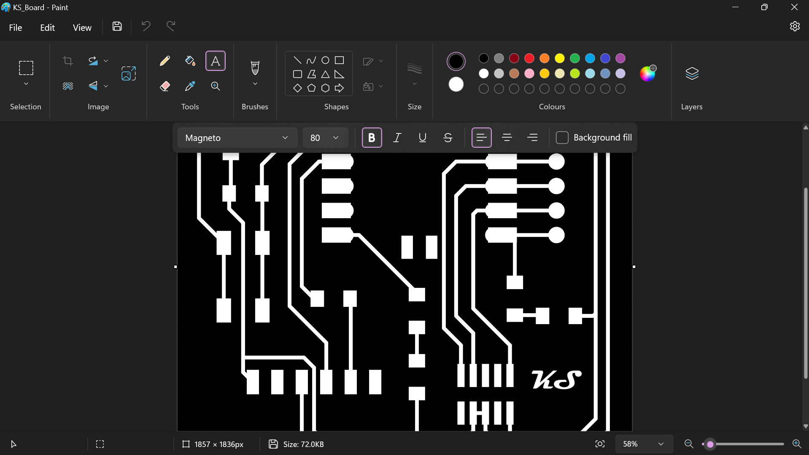Creating a flexible PCB (Printable Circuit Board) with conducting tape and a vinyl cutter:
I followed the following steps to get an experience on the basic steps to develop the flexible PCB using conducting tape and here are the steps I followed:
- Identify the Circuit
- Simplify Design: Since you're using conducting tape and vinyl cutter, for the first time I chose a simple design from Fab Programmer's page and chose Hello T412 board as the design was quite small. I removed the font Hello T412 as the size would be difficult to cut using vinyl cutter. You can find the design I chose as shown below:
- Prepare the Vinyl Cutter
- Material Selection: Choose a flexible substrate material that your vinyl cutter can handle, such as thin vinyl sheets. The material should be durable enough to support the conductive tape and withstand the intended application's environment. Hence, to make it durable I mounted the conductive tape onto transfer tape for additional strength and placed it on the vinyl cutter for cutting.
- Test Cuts: Perform test cuts to adjust the blade depth, pressure, and speed settings. This ensures that the cutter will precisely cut your design without damaging the substrate.
- Cut the Design
- Convert and Import: Convert your circuit design into a format compatible with your vinyl cutter's software. This might involve exporting your design as a DXF or SVG file and then importing it into the cutting software.
- Perform the Cut: Load your substrate material into the vinyl cutter and run the job to cut out your circuit pattern. After cutting, carefully weed out the excess material, leaving your circuit design intact on the substrate.
After carefully removing the extra fillers around the traces the resulting pcb looked something like this. I removed the extras carefully using tweezers without disturbing the circuit.
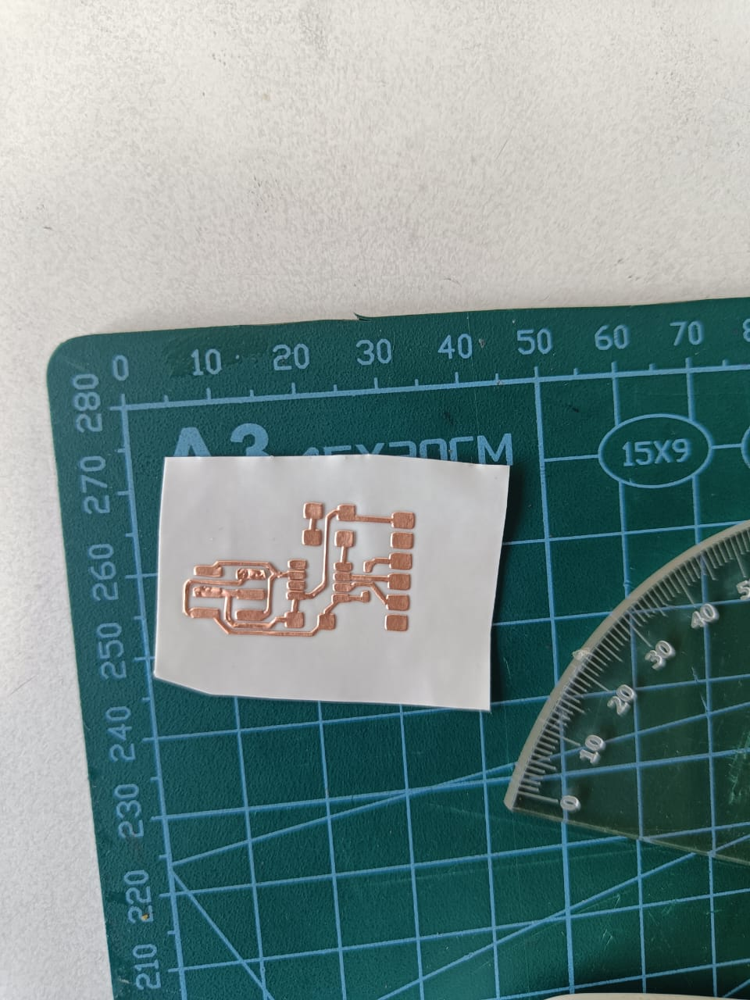 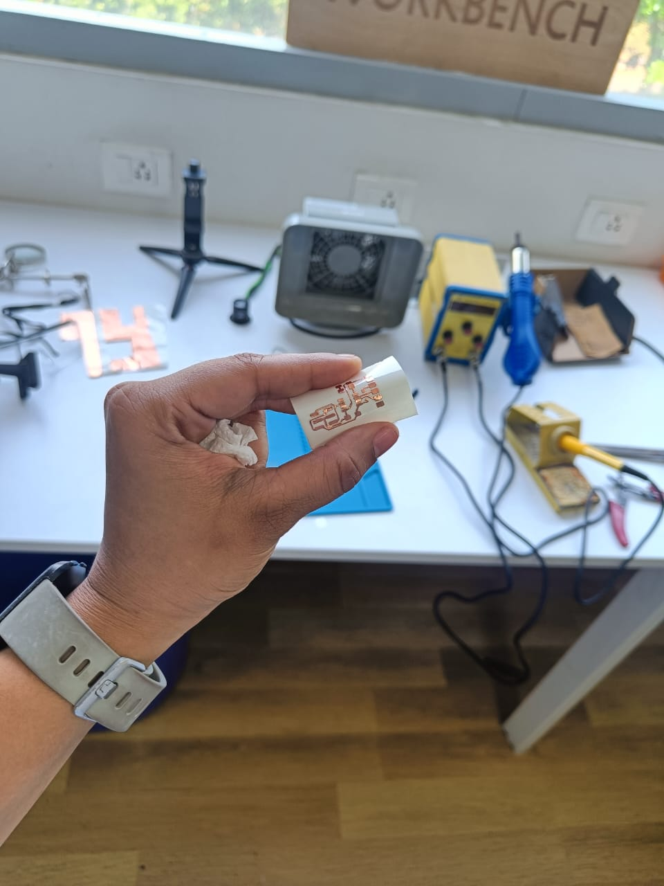 - Add Components
- Place Components: Position your electronic components onto the designated areas of your circuit. This may involve soldering, using conductive adhesive, or creating pressure contacts, depending on your design and the components' requirements.
- Solder Carefully: If soldering, be cautious to not overheat the conductive tape or the substrate, as this could cause lifting or damage. Some prefer low-temperature solder or conductive epoxy for this reason.
Voila! There's my flexible PCB stuck nicely on my curved water bottle after assembling all the components listed above.
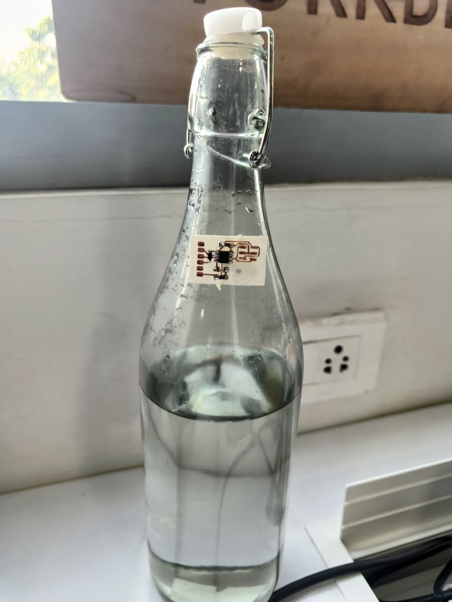 - Test and Debug
- Continuity Testing: Use a multimeter to check for continuity and ensure there are no short circuits in your design.
- Functional Testing: Power up your circuit and test its functionality. Debug any issues by checking connections, component placement, and the integrity of the conductive paths.
- Final Adjustments and Encapsulation
- Adjustments: Make any necessary adjustments to improve the circuit's performance or durability.
- Encapsulation: To protect your flexible PCB, consider encapsulating it in a flexible clear coat or using heat-shrink tubing. This step is particularly important for wearable electronics or applications exposed to harsh conditions.
Reflow Soldering:
Reflow soldering is a process widely used in the electronics industry to solder surface mount components (SMCs) to printed circuit boards (PCBs). It involves applying solder paste (a mix of flux and solder powder) to the board, placing components on top, and then heating the assembly to melt the solder without directly applying heat to the solder itself. This method allows for the efficient and reliable soldering of many components at once, making it ideal for mass production and small, densely packed circuits found in modern electronic devices.
The Reflow Soldering Process
Apply Solder Paste: Solder paste is applied to the PCB at the locations where components will be placed. This is typically done using a stencil that matches the PCB layout, ensuring solder paste goes only where needed. The paste can be applied with a squeegee or similar tool that forces it through the openings in the stencil and onto the PCB.
Here's our stencil arrangement to perfectly fit the breakout board "ProshPlay" designed by Saheen Palayi in our lab.
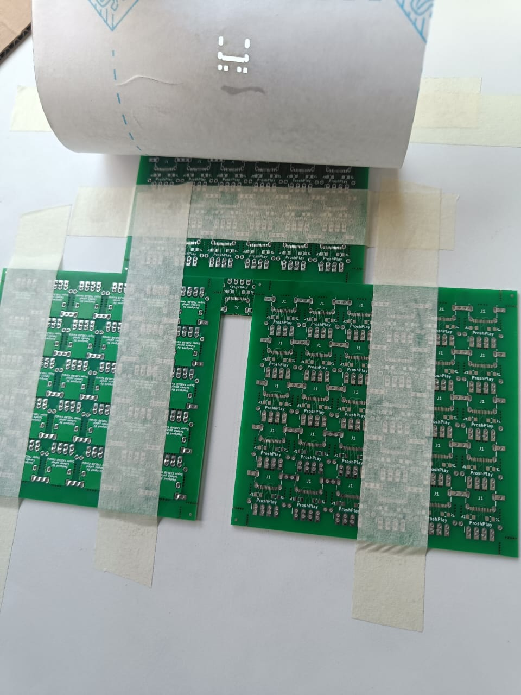 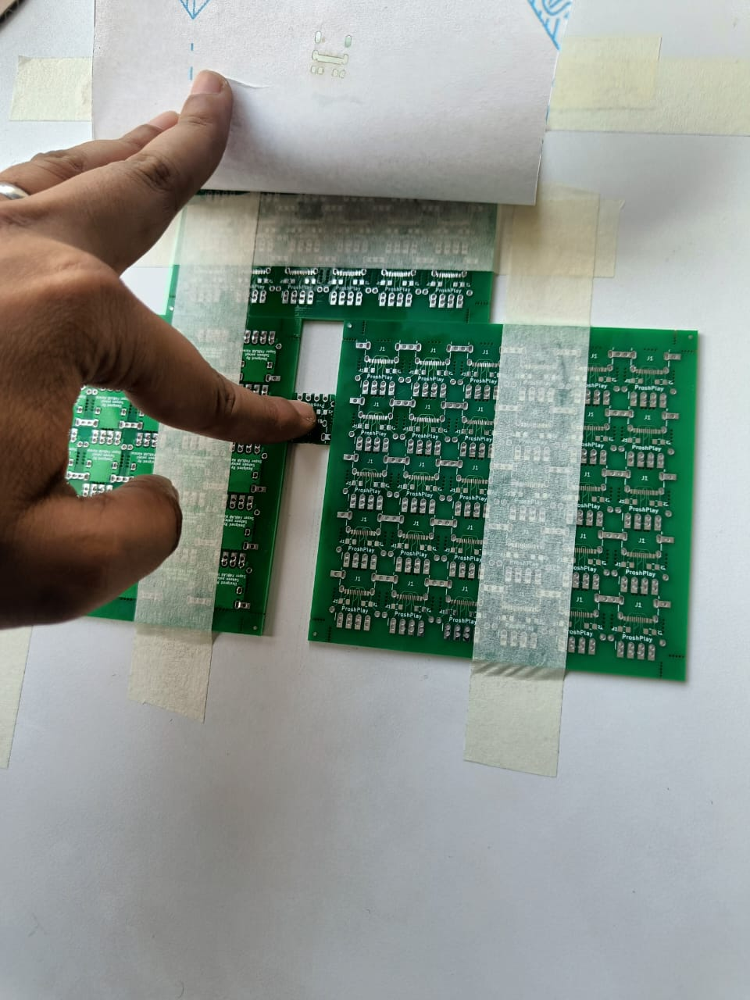 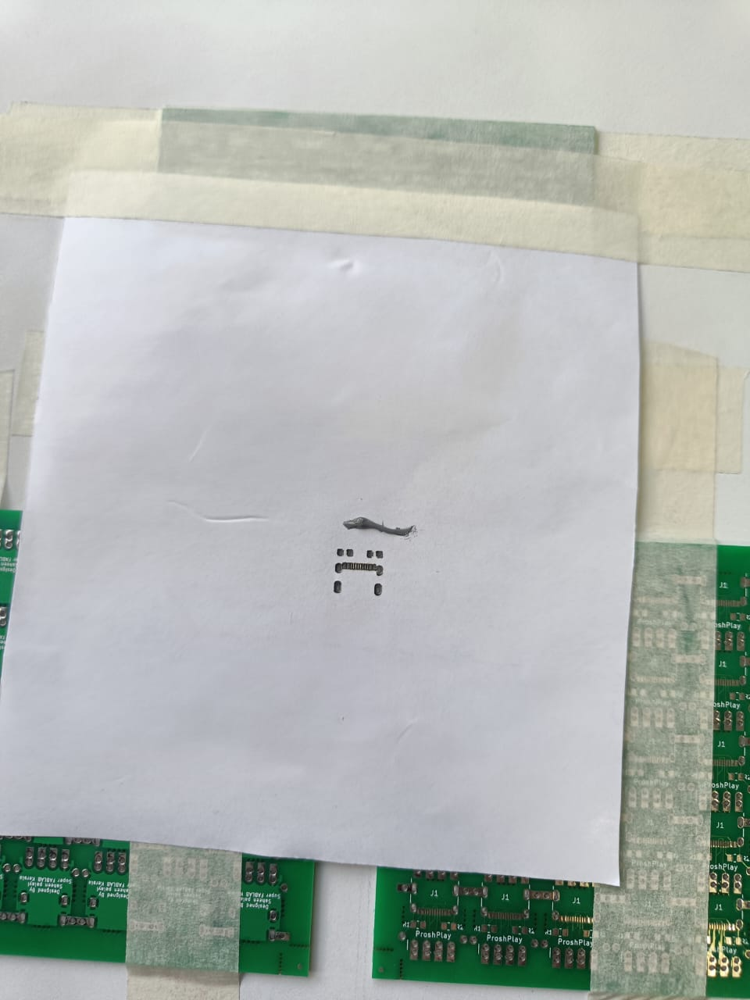Here's the solder paste we used and the temperature details of the solder paste are mentioned as follows:
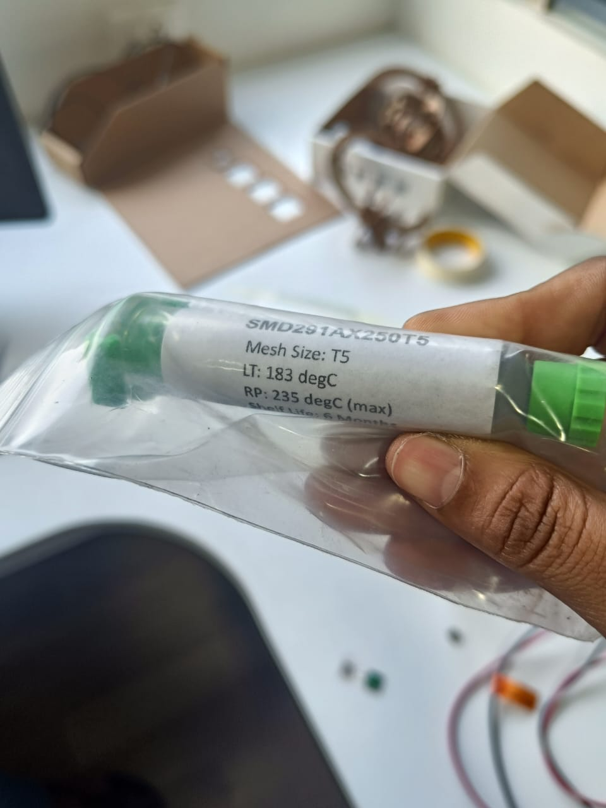Place Components: Components are placed on the PCB where the solder paste has been applied. In production, this is often done with a pick-and-place machine, which precisely positions each component. For DIY projects, components can be placed by hand using tweezers, though this requires patience and a steady hand.
Here are the components chosen for this design:
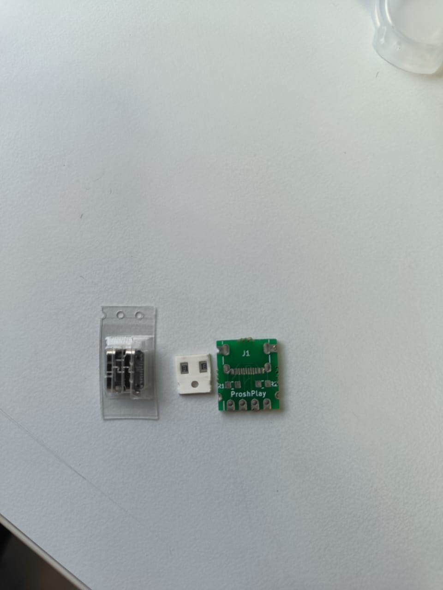Components were carefully placed on the solder paste applied on to the board:
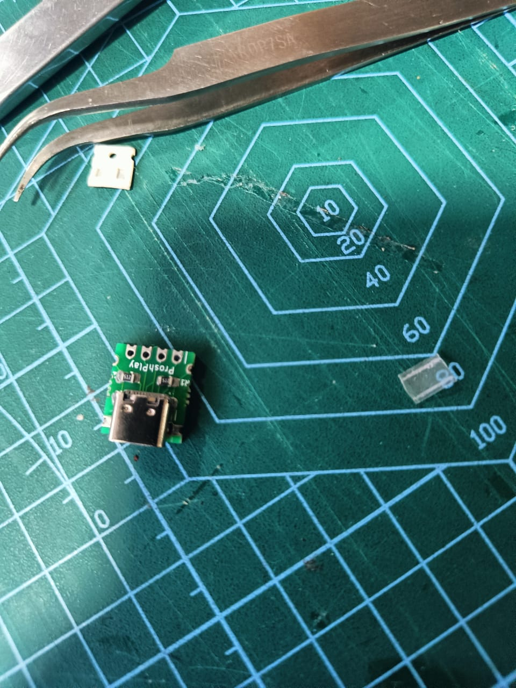Reflow Soldering:
Preheat Phase: The PCB assembly is gradually heated to dry the paste and activate the flux, a chemical agent in the solder paste that cleans metal surfaces to improve the solder's ability to bond.
We did this using a reflow oven designed by a startup named "ZoidLabs".
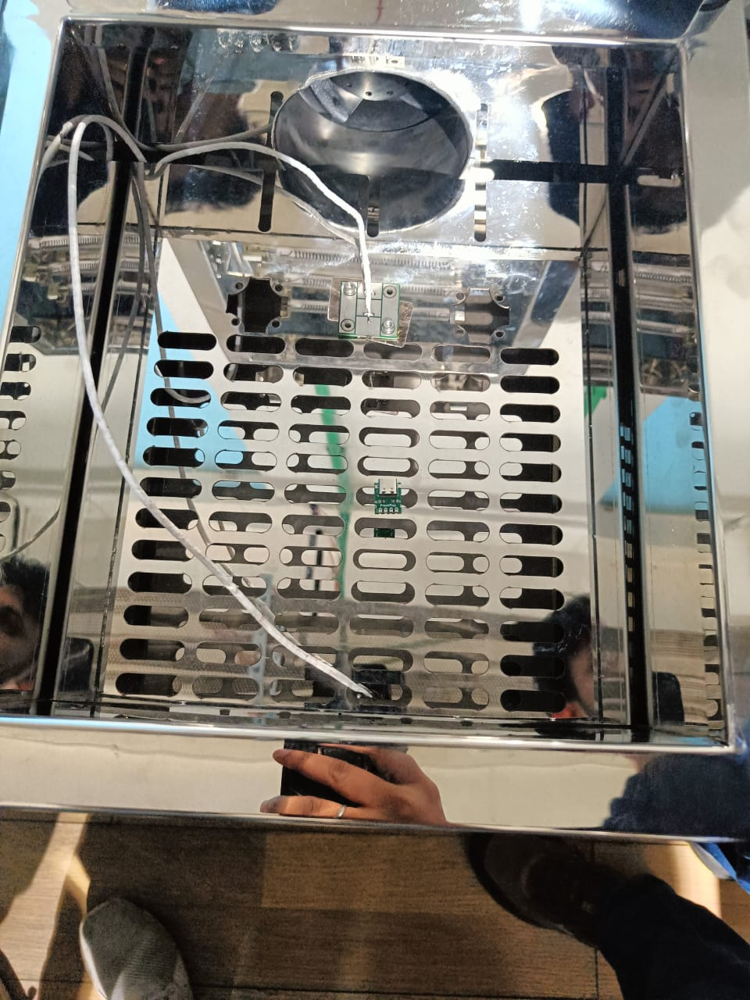They have a mobile interface that can be accessed by connecting to that device using WiFi and we can monitor the temperature changes during different phases mentioned below.
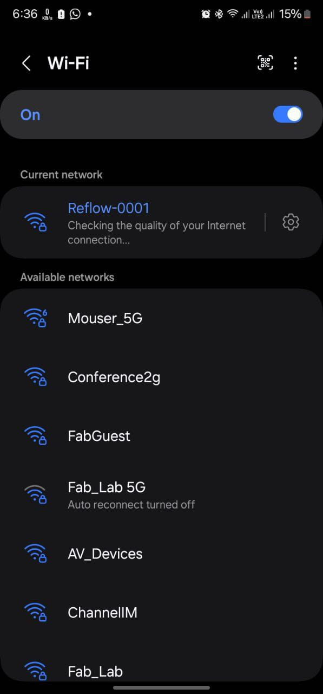 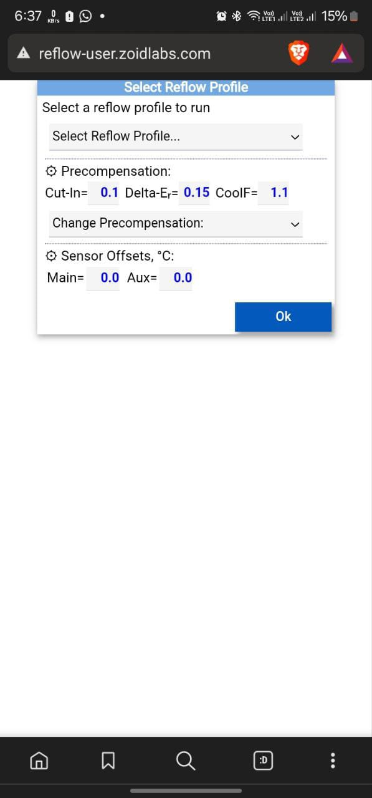The settings of temperature and PCB type:
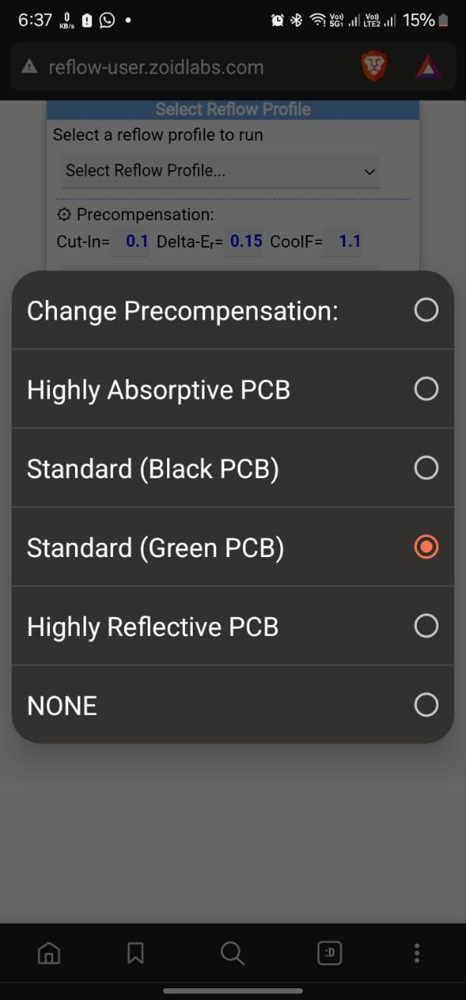 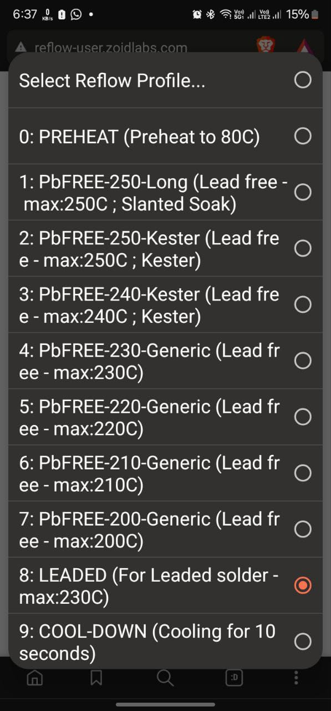Soak Phase: Temperature is further increased to allow the entire assembly to reach a uniform temperature. This helps to avoid thermal shock to components and ensures the solder melts evenly.
Reflow Phase: The temperature is raised to above the melting point of the solder, typically around 183°C to 250°C (361°F to 482°F) for lead-free solder, causing the solder paste to melt, flow, and form solder joints.
Cooling Phase: Finally, the assembly is cooled in a controlled manner to solidify the solder, forming strong and reliable electrical and mechanical connections.
 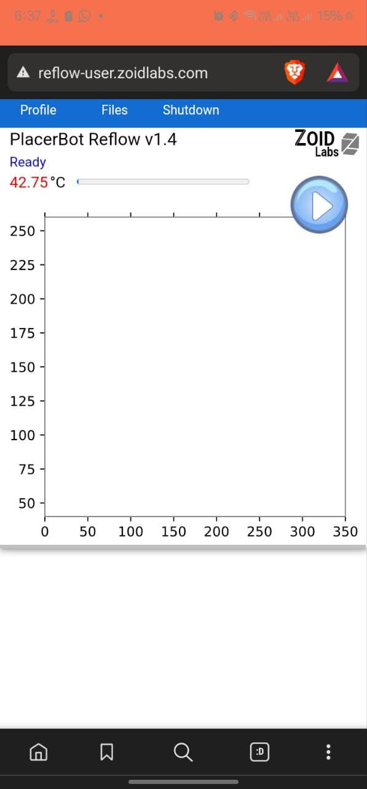
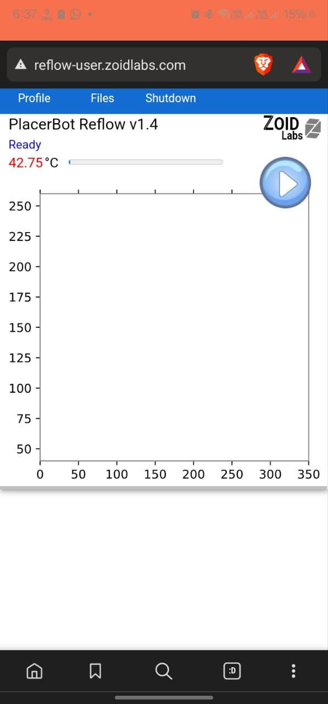
Inspection and Testing: Once cooled, inspect your solder joints for quality. Look for shiny, smooth joints with no bridges or cold solder spots. Use a magnifying glass or microscope if necessary. Test the circuit to ensure all connections are solid and the device functions as intended.
Safety Tips
- Ventilation: Ensure good ventilation to avoid inhaling fumes from the flux.
- Personal Protective Equipment (PPE): Wear safety glasses and gloves to protect against splashes and hot surfaces.
- Avoid Overheating: Pay close attention to the temperature profile to prevent damaging components or the PCB.